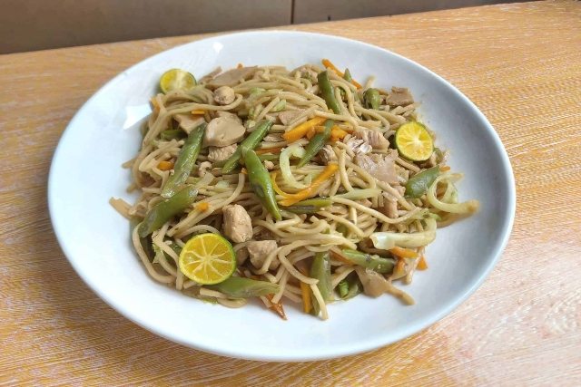

COOK BOOK
☰
Home
About
Check Out Our Top Favorite Foods!
Peek your interest in our Foods
Search
PANCIT

WHAT YOU NEED:
1 (12 ounce) package dried rice noodles
1 teaspoon vegetable oil
1 onion, finely diced
3 cloves garlic, minced
2 cups diced cooked chicken breast meat
1 small head cabbage, thinly sliced
4 carrots, thinly sliced
¼ cup soy sauce
2 lemons - cut into wedges, for garnish
HOW TO MAKE IT:
Gather all ingredients.
Place rice noodles in a large bowl; cover with warm water and let soften for 8 to 10 minutes. Drain and set aside.
Meanwhile, heat oil in a wok or large skillet over medium-low heat. Add onion and garlic; cook and stir until onion is tender, about 3 to 5 minutes.
Stir in chicken, cabbage, carrots, and soy sauce. Cook until cabbage begins to soften.
Toss in noodles and cook, stirring constantly, until heated through.
Transfer pancit to a serving dish and garnish with lemon wedges.